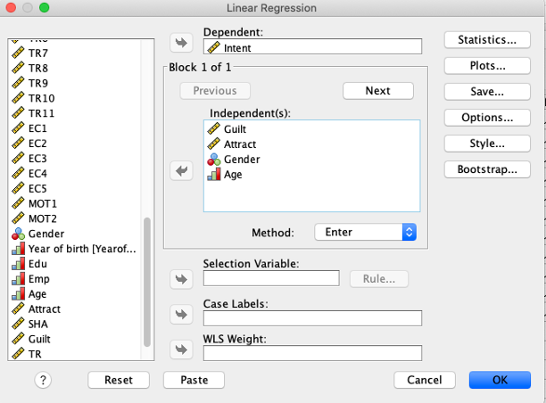
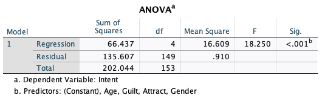

5 Regression
Data: RobotGLP.sav (available on Moodle)
5.1 Learning objectives
The aim of this lab is to help you to use SPSS to conduct regression analysis, which is useful in explaining the relationship between a set of independent variables and a dependent variable.
At the end of this lab, we hope that you will be able to
Understand the meaning of independent and dependent variables
Select appropriate independent variables to explain a dependent variable
Produce and interpret basic SPSS outputs for multiple regression
Understand the meaning of multicollinearity, how to detect and remedy it
FYI, many students of the previous cohorts used regression when they wrote their MSc dissertations.
5.2 Why Regression
In marketing research, we often need to determine the impact of a set of marketing variables on one variable – a factor we want to understand or predict. Furthermore, among those variables we may want to find out which variables matter most, and which variables are not so important that we can ignore. Regression analysis can help us findings the answers to these questions.
In this workshop, we want to investigate factors that influence consumers’ decision to join a green loyalty program – This LP encourages behaviours from hotel guests that are good for environment (e.g., reuse towels).
In this lab, we consider the following case. A hotel manager who recently launch a green loyalty program (GLP) wants to know about factors that affect consumers’ intention to join the hotel GLP. The hotel manager decides to develop a survey and asks the hotel’s guests to fill in an offline survey. The survey form was handed in to hotel guests by a frontline service robot (see the image above). The survey contains items to measure the following constructs:
Intention to join the green loyalty program
Anticipated guilt if not joining the green loyalty program
Perceived attractiveness of hotel receptionist
Age
Gender
Anticipated guilt, Perceived Attractiveness, Age, Gender are called the independent variables and Intention to join the green loyalty program is the dependent variable. The notion of the dependent variable comes from our prediction that its value depends on the values of the independent variables. The relationship between Intention to join the green LP the and the four independent variables can be written as:
Intention to join the green LP ~ Anticipated Guilt + Perceived Attractiveness + Age + Gender + error.
You can read the above expression as a consumer’ intention to join the green loyalty program is influenced by the consumer’s anticipated of guilt, perceived attractiveness, age, and gender, and some unknown factors represented by an error term. The relationship can be represented by a mathematical expression as below. The names of the variables are shortened.
\[\begin{equation} Intent = \beta_0 + \beta_1 * Guilt + \beta_2 * Attract + \beta_3 * Age + \beta_4 * Gender. \end{equation}\]where \(\beta_0\), \(\beta_1\), \(\beta_2\), \(\beta_3\), and \(\beta_4\) are parameters that capture the impact of each of the independent variables on intention.
We use regression procedure in SPSS to find out the estimates for all parameters using sample data (\(\beta_0\) is just a constant so it is not of our interest).
Variable Intent, Guilt, and Attract were average scores of a multi-item scale where each item in the scale were measured using a Likert scale ranging from 1 = strongly disagree to 7=strongly agree. Age is a continuous variable, and Gender is a 0,1 variable.
If you want to examine whether Guilt is a significant factor, then you want to test \(H0\): \(\beta_1=0\) against \(H1\): \(\beta_1 \ne 0\). SPSS will report the p-value associated with \(H0\). If p-value is less than 0.05, you reject \(H0\) otherwise retain it. If you reject \(H0\), you can conclude that Guilt is a significant factor that influences intent.
If you hypothesize that Guilt is a significant factor and has a positive impact on satisfaction, then you want to test \(H0\): \(\beta_1=0\) against \(H1\): \(\beta_1 > 0\). This is a one-sided test because the alternative hypothesis has a ‘greater’ sign. However, SPSS will always report the p-value associated with 2-sided test. Therefore, you have to divide the reported p-value by 2. If this halved p-value (i.e., p-value/2) is less than 0.05, you reject \(H0\) otherwise retain it. If you reject \(H0\), you can conclude that Guilt has a significant positive influence on Intent.
SPSS will always report the p-value associated with 2-sided test.
For one-sided test, you have to divide the reported p-value by half.
5.3 Conducting Multiple Regression with SPSS
Open RobotGLP.sav – Thanks to Jingxi for allowing us to use a subset of her data to test the above model.
To conduct a regression analysis in SPSS, click the following: Analyze\(\rightarrow\)Regression\(\rightarrow\)Linear.
Enter Intent into the dependent variable box.
Enter Guilt,Attract, Age,Gender` into the independent variable(s) box.

Click OK
SPSS produces four tables. The first one does not offer much information. Therefore, we focus our attention to the next three tables.
ANOVA table: Is the model meaningful?

This table tells whether or not the model is meaningful. If the sig value is less than 0.05, then the model is meaningful. If p-value is greater than 0.05, then model should be dismissed and don’t interpret other outputs. In this example, the sig. value is less than 0.05; therefore we have a meaningful model. We can proceed with the next output.
- Model Summary table: How good is the model?
Having known the model is meaningful, how do we know whether it is good enough? The Model Summary table provides the answer to this question.

The model summary table tells you how well the independent variables explain variation in the dependent variable. The adjusted \(R^2\) is 0.311 indicating that about 31% of the variation in the intention score is explained by the four independent variables (Guilt, Attract, Age, and Gender). Theoretically, the maximum possible value for adjusted R-square is 100% indicating a perfect model!
Adjusted \(R^2\) is \(R^2\) that is adjusted for the number of independent variables in the model. The more independent variable you have in the model, the larger the \(R^2\) will be. The adjusted \(R^2\) prevents the inflation. You can use the following convention to qualify the impact of the set of the independent variables on the dependent variable1:
\(R^2\) ≥ 0.02 small effect
≥ 0.13 medium
≥ 0.26 large
Knowing the adjusted \(R^2\), indicate the strength of the impact of Guilt, Attract, Age, and Gender.
Maximizing \(R^2\) value should not be your main goal in regression. Do not be tempted to select variables with the aim of increasing \(R^2\) value. \(R^2\) value in social sciences are typically in the range of 0.1 to 0.5. Selecting variables should be motivated by theories.
- Coefficients

This table tells us which of the independent variables significantly explain or predict the dependent variable. In this case three variables significantly explain Intent. These are Guilt, Attract, and Age, whereas Gender is not significant. Furthermore, the standardized beta values tell us which variable has the strongest impact on Intent. In this case Attract is the strongest predictor followed by Guilt and Age.
If you want to make a prediction, use the unstandardized coefficients (B). If a female respondent aged 20 assigned a rating of three on Guilt, Attract can you predict her intention level? (round-off your answer)
5.4 Multicollinearity Problems
High correlation among independent variables is problematic in multiple regression because it is hard for us to determine the individual contribution of each of the independent variables in the model. For example, if Attract is highly correlated with Guilt, then we cannot conclude that Attract have the strongest influence on Intent because Guilt also gives contribution to the magnitude of Attract-Intent relationship (it looks stronger than it should be). In other words, the coefficients associated with the regression estimates are biased – not the same as their true population values.
The situation where an independent variable is highly correlated with another variable is referred to as multicollinearity problem. To diagnose whether multicollinearity exists, you can check it in two ways.
- Inspect the correlation coefficient among the independent variables. To do correlation analysis in SPSS, follow this step: Analyze\(\rightarrow\)Correlation\(\rightarrow\)Bivariate. If two variables is highly correlated with the correlation coefficient is larger than 0.9, your model may suffer from a multicollinearity problem. In practice, you should be cautious, if the correlation is 0.7.
Check the correlation coefficients among the predictors in the model.
- Rerun your regression.
Click: Analyze\(\rightarrow\)Regression\(\rightarrow\)Linear.
Click
Statisticsoptions.Select
Collinearity diagnostic. ClickContinueand ClickOK.Inspect the VIF (Variance Inflation Factor values in the output.
Multicollinearity exists if VIF (variance inflation factor) > 10.

See the above output, does the model suffer from a multicollinearity problem?
5.5 If Multicollinearity Exists
What should you do if multicollinearity exists?
You can deal with it using one of the following techniques:
Omit one or more highly correlated independent variables
Create a composite variable e.g., by taking the average score of two variables if the two variables causes multicollinearity averaging or using Principle Component Analysis (beyond the scope of our workshops)
Use the model that suffers from multicollinearity but for prediction purposes only.
Collect more samples
5.6 Video
6 SPSS Workshop 5: Quick Task Guide
6.1 🎯 Core Analytical Tasks
| Task / Objective | SPSS Menu Path | Key Variables / Settings | Key Notes & Interpretation |
|---|---|---|---|
| Run a Multiple Regression | Analyze → Regression → Linear... |
Dependent: IntentIndependent(s): Guilt, Attract, Age, Gender |
Tests if a set of independent variables predicts a continuous dependent variable. |
| Check Overall Model Fit & Significance | Output: ANOVA Table |
N/A | Check the Sig. value (p-value). p < 0.05 means the overall regression model is statistically meaningful. If p > 0.05, do not interpret further. |
| Assess Model Explanatory Power | Output: Model Summary Table |
Look at Adjusted R Square | Indicates the percentage of variance in the dependent variable explained by the model. Guidelines: ≥ 0.02 (small), ≥ 0.13 (medium), ≥ 0.26 (large). |
| Interpret Individual Predictors | Output: Coefficients Table |
Check Sig., B, and Beta columns | Significance: Sig. < 0.05 = variable is a significant predictor.Strength: Compare Standardized Coefficients (Beta); higher absolute value = stronger effect. Prediction: Use Unstandardized Coefficients (B) in the regression equation. |
| Diagnose Multicollinearity | 1. Correlation: Analyze → Correlate → Bivariate2. VIF: In Linear Regression dialog, click Statistics → Check Collinearity diagnostics |
Check correlation matrix and VIF values | Problem if: Correlation between predictors > 0.7 (caution) or > 0.9 (serious). Or if: VIF > 10 in the coefficients table. |
6.2 💡 Essential Concepts & Step-by-Step Workflow
6.2.1 1. The Complete Regression Workflow
- Run the Regression:
Analyze→Regression→Linear. Specify your dependent (Intent) and independent variables (Guilt,Attract,Age,Gender). - Check Overall Model: Look at the ANOVA table. Proceed only if Sig. (p) < 0.05.
- Check Explanatory Power: Look at the Adjusted R² in the
Model Summarytable. - Interpret Predictors: In the
Coefficientstable:- Identify significant predictors (
Sig. < 0.05). - Use Beta to compare the relative strength of significant predictors.
- Identify significant predictors (
- Check for Multicollinearity: Re-run regression with
Collinearity diagnosticsinStatistics. Ensure all VIF values are < 10.
6.2.2 2. Interpreting Key Outputs
- The Regression Equation: Use the Unstandardized Coefficients (B) to form the equation for prediction:
Intent = B₀ + (B₁ * Guilt) + (B₂ * Attract) + (B₃ * Age) + (B₄ * Gender) - Making a Prediction (Example from Lab Task): For a female (
Gender=1), aged 20, withGuilt=3andAttract=5:- Find the B coefficients and constant from your output.
- Plug into equation:
Intent = B₀ + (B₁ * Guilt) + (B₂ * Attract) + (B₃ * Age) + (B₄ * Gender) - Calculate to predict the intention score.
- One-tailed vs. Two-tailed Tests: SPSS reports two-tailed p-values. For a one-tailed test (directional hypothesis, e.g.,
H1: β₁ > 0), divide the reported p-value by 2.
6.2.3 3. Dealing with Multicollinearity
If you detect multicollinearity (VIF > 10 or very high correlations), consider these remedies: 1. Remove Variables: Omit one of the highly correlated independent variables. 2. Combine Variables: Create a composite score (e.g., average) if the correlated variables measure a similar construct. 3. Purpose-Limited Use: Use the model only for prediction, not for interpreting individual coefficients. 4. Collect More Data: Increase your sample size.
6.3 ▶️ Step-by-Step Practice Task
- Run the Analysis: Open
RobotGLP.sav. RunAnalyze→Regression→LinearwithIntentas Dependent andGuilt,Attract,Age,Genderas Independents. ClickOK. - Interpret Model Fit:
- ANOVA Table: Is the overall model significant (Sig. < 0.05)?
- Model Summary: What is the Adjusted R²? How would you describe its size?
- Interpret Predictors: In the
Coefficientstable:- Which variables are significant predictors of
Intent(Sig. < 0.05)? - Among the significant ones, which has the strongest effect (largest absolute Beta value)?
- Which variables are significant predictors of
- Check for Multicollinearity:
- Re-run the regression, clicking
Statisticsand checkingCollinearity diagnostics. - Check the VIF values in the new
Coefficientstable. Is multicollinearity a problem (VIF > 10)?
- Re-run the regression, clicking
- Make a Prediction: Use the Unstandardized Coefficients (B) to predict the
Intentscore for a 20-year-old female withGuilt=3andAttract=5.
Ellis, Paul D. 2011. The Essential Guide to Effect Sizes, p.41↩︎